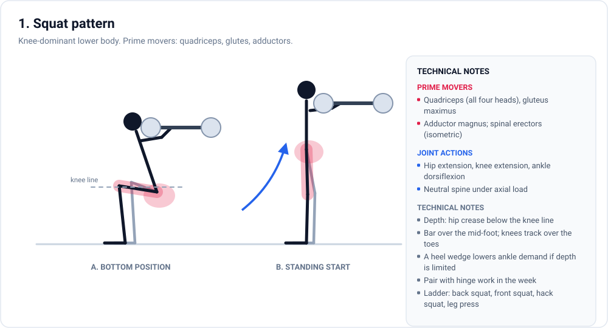

Evidence review
Designing an (almost) optimal hypertrophy routine
What actually drives muscle growth, ranked by how much it matters. Volume, effort, progression, and the six patterns that cover the body.
The argument in short
The hierarchy the full document defends, minus the citations.
Exercise selection gets most of the argument and deserves the least of it. What decides the result is duller: whether you keep training, whether the sets get harder, how many hard sets land each week, and how close to failure they stop. Everything else adjusts those levers.
- Adherence over yearsQuit and the plan stops mattering. A middling routine you still follow through a bad month wins against a perfect one you drop by week six.
- Progressive overload with effortPush reps or load while effort holds steady. Strength climbs faster than size in the first months, mostly because the nervous system is learning the movement. Expect it and keep going.
- Weekly volume inside a bandGrowth tracks hard sets until it stops tracking them. For most lifters, roughly 10 to 20 hard sets per muscle each week is a defensible range, fuzzy at both edges.
- Proximity to failureEnd a set 0 to 3 reps shy of failure and it grows more than one that stops well short. Strength barely cares about the difference.
- CoverageThe six patterns are a coverage check, not a creed.
Some popular topics earn less than they get. Hormone spikes after a session do not predict growth. Loaded with the same effort and volume, machines build about as much muscle as free weights. Rest beyond a sensible minimum is close to irrelevant. Order matters mostly because it decides how good the later sets are.
Training is a budget. Each hard set draws on recovery, and the return shrinks as weekly volume rises.
The six patterns
Enough coverage to leave no muscle under-dosed, using the fewest exercises that will do it.
| Pattern | Prime movers | Joint action |
|---|---|---|
| Squat | Quadriceps, gluteus maximus, adductor magnus | Hip, knee and ankle extension |
| Hinge | Hamstrings, gluteus maximus, erector spinae | Hip extension, slight knee flexion |
| Horizontal push | Pectoralis major, anterior deltoid, triceps | Shoulder horizontal adduction, elbow extension |
| Vertical push | Deltoids, triceps, upper pectoralis, serratus anterior | Shoulder flexion and abduction, elbow extension |
| Horizontal pull | Mid and lower traps, rhomboids, latissimus dorsi, posterior deltoid, elbow flexors | Shoulder horizontal abduction, elbow flexion, scapular retraction |
| Vertical pull | Latissimus dorsi, teres major, biceps, brachialis | Shoulder adduction and extension, elbow flexion, scapular depression |
How the figures were made
Every figure is a single SVG file sitting on a CC BY 4.0 anatomy plate from OpenStax. I cropped and recoloured the plate, traced each muscle by hand, then drew the outline back over the anatomy to check the fit before adding callouts, joint lines and timing charts.
Because the base is CC BY 4.0, the figures can be reused with attribution. Nothing is stock art or a redrawn approximation of a different body.

What is in the full document
Written to be read in order, or used as a reference.
Limits
The trials are small, several levers rest on indirect evidence, and individual response varies. Where the evidence stops, the document says so rather than papering over it.
This is general information, not medical advice. If you have an injury or a health condition, talk to a clinician who can examine you.